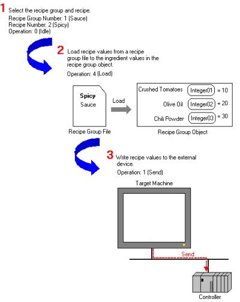
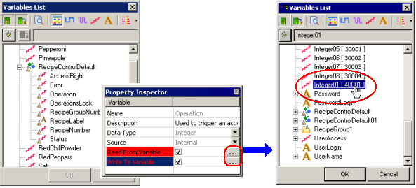
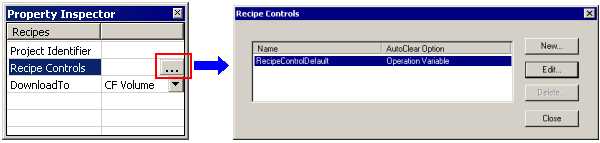

|
|
|
|
|
|
|
|
The recipe object uses recipe control variables to trigger recipe object operations, such as load, save, and send; provide or deny access to certain operations; and offer feedback when an error occurs. In the Editor, a default recipe control exists.
Recipes can be controlled using one of these methods:
Create panel objects to display numeric data for the various recipe control variables such as recipe group number, recipe number, and operation trigger. You can use Recipe parts in the Toolchest or part and animation associated with the corresponding recipe control variable. Recipe parts in the Toolchest are more efficient and the recommended method to use. For more information, see Section 17.4.1, Creating Recipe Parts.
Automate recipe operations on the equipment. For more information, see Automating Your Processes.
Write scripts to control the various recipe control variables such as recipe group, recipe, and operation. For more information, see Section 17.4.2, Creating Recipe Operations Using Actions.
When you run the project, how the recipe controls work can be best explained using the pizza example. The following describes the operations and lists the recipe control variables that are used to make sauce during the pizza production process.

To automate recipe operations on the equipment, you would set the operation device address with the same value as your operation control variable.
On the Editor, define which device address will be used to control recipe operations. To do this, in the Variable Editor, select the recipe control variable.
For any recipe control variables you want to associate with equipment, set up the Read From and Write To variables.
Click  to open the Variables List, and select the external variable set up with a device address.
to open the Variables List, and select the external variable set up with a device address.

In the equipment ladder program, select the recipe group number, the recipe number, and the operation (for example, send). Then check the Status variable for operation results.
For more information, see Section 17.3.5.3, How the Clear Option for Recipe Controls Work (Timing Charts).
In the Property Inspector for the Recipes node, click  in the Recipe Controls property to open the Recipe Control Groups dialog box. You can use the Recipe Control Groups dialog box to create a new recipe control, edit the recipe control name, or remove a recipe control.
in the Recipe Controls property to open the Recipe Control Groups dialog box. You can use the Recipe Control Groups dialog box to create a new recipe control, edit the recipe control name, or remove a recipe control.

When you create or edit a recipe control, the following dialog box is displayed.

The following table lists the properties in the Recipe Control dialog box.
|
Property |
Description |
|
Name |
The name of the recipe control. This field is read-only |
|
AutoClear Option |
Set the AutoClearOption property to Operation Variable, Status/Error Variables, or None:
For more information on the AutoClearOption, see Section 17.3.5.3, How the Clear Option for Recipe Controls Work (Timing Charts). |
|
Load Recipe on Startup |
Select the check box to enable the Recipe Group and Recipe properties. When this property is selected, the specified recipe group and recipe loads when the application starts up. |
|
Recipe Group |
Select the recipe group to use as the default when the application starts up. |
|
Recipe |
Select the recipe number to use as the default when the application starts up. |